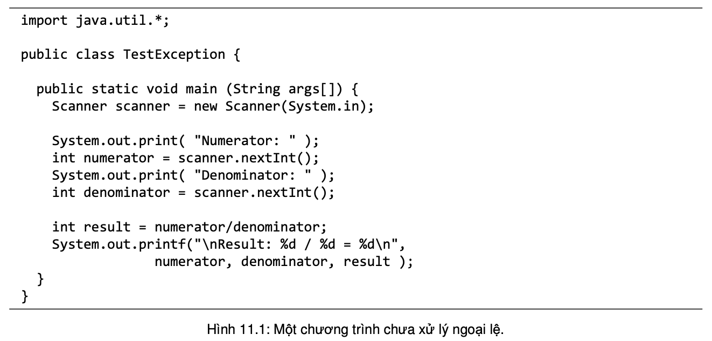
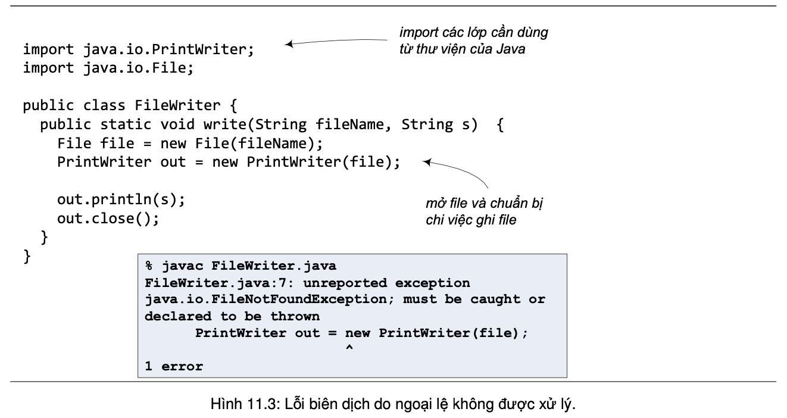
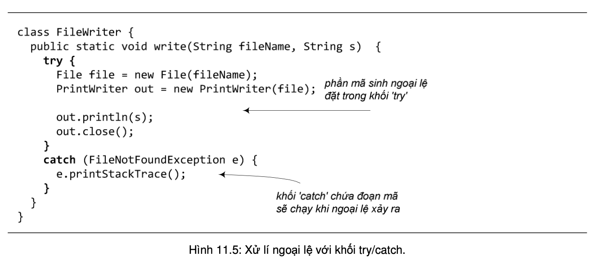
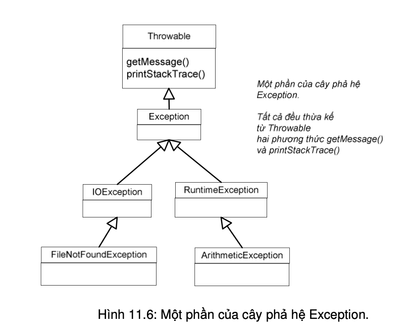

Lỗi chương trình là chuyện thường xảy ra. Các tình huống bất thường cũng xảy ra. Không tìm thấy file. Server bị sự cố. Ngoại lệ (exception) là thuật ngữ chỉ tình trạng sai hoặc bất thường xảy ra khi một chương trình đang chạy. Ta có thể gặp vô số các tình huống như vậy, chẳng hạn như khi chương trình thực hiện phép chia cho 0 (ngoại lệ tính toán số học), đọc phải một giá trị không nguyên trong khi đang chờ đọc một giá trị kiểu int (ngoại lệ định dạng số), hoặc truy cập tới một phần tử không nằm trong mảng (ngoại lệ chỉ số nằm ngoài mảng). Các lỗi và tình trạng bất thường có thể xảy ra là vô số.
Một chương trình dù được thiết kế tốt đến đâu thì vẫn có khả năng xảy ra lỗi trong khi thực thi. Dù có là lập trình viên giỏi đến đâu thì ta vẫn không thể kiểm soát mọi thứ. Trong những phương thức có khả năng gặp sự cố, ta cần những đoạn mã để xử lý sự cố nếu như chúng xảy ra.
Phương pháp truyền thống cho việc phòng chống lỗi là chèn vào giữa logic chương trình những đoạn lệnh phát hiện và xử lý lỗi; dùng giá trị trả về của hàm làm phương tiện báo lỗi cho nơi gọi hàm. Tuy nhiên, phương pháp này có những nhược điểm như: các đoạn mã phát hiện và xử lý lỗi nằm lẫn trong thuật toán chính làm chương trình rối hơn, khó hiểu hơn, dẫn tới khó kiểm soát hơn; đôi khi giá trị trả về phải dành cho việc thông báo kết quả tính toán của hàm nên khó có thể tìm một giá trị thích hợp để dành riêng cho việc báo lỗi.
Trong ngôn ngữ Java, ngoại lệ (exception handling) là cơ chế cho phép xử lý tốt các tình trạng này. Nó cho phép giải quyết các ngoại lệ có thể xảy ra sao cho chương trình có thể chạy tiếp hoặc kết thúc một cách nhẹ nhàng, giúp lập trình viên tạo được các chương trình bền bỉ và chịu lỗi tốt hơn. So với phương pháp phòng chống lỗi truyền thống, cơ chế ngoại lệ có làm chương trình chạy chậm đi một chút, nhưng đổi lại là cấu trúc chương trình trong sáng hơn, dễ viết và dễ hiểu hơn.
Làm thế nào để xử lí ngoại lệ sau khi đã biết thông tin về các loại ngoại lệ có thể phát sinh từ các phương thức ta dùng đến trong chương trình? Có hai lựa chọn, một là giải quyết tại chỗ, hai là tránh né trách nhiệm. Thực ra lựa chọn thứ hai không hẳn là né được hoàn toàn, nhưng ta sẽ trình bày chi tiết về lựa chọn này sau. Trước hết, ta nói về cách xử lí ngoại lệ tại chỗ.
Để xử lý các ngoại lệ có thể được ném ra từ một đoạn mã, ta bọc đoạn mã đó trong một khối try/catch.
Khối try/catch gồm một khối try chứa phần mã có thể phát sinh ngoại lệ và ngay sau đó là một khối catch với nhiệm 'bắt' ngoại lệ được ném từ trong khối try và xử lí sự cố đó (có thể có vài khối catch theo sau một khối try, ta sẽ nói đến vấn đề này sau). Nội dung của khối catch tùy vào việc ta muốn làm gì khi loại sự cố cụ thể đó xảy ra. Ví dụ, trong Hình 11.5, khối catch chỉ làm một việc đơn giản là gọi phương thức printStackTrace() của ngoại lệ vừa bắt được để in ra màn hình thông tin về dấu vết của ngoại lệ đó trong ngăn xếp các lời gọi phương thức (stack trace). Đây là hoạt động xử lý ngoại lệ thường dùng trong khi đang tìm lỗi của chương trình.
Cái gọi là ngoại lệ mà nơi ném nơi bắt đó thực chất là cái gì trong ngôn ngữ Java? Cũng như nhiều thứ khác trong chương trình Java, mỗi ngoại lệ là một đối tượng của cây phả hệ Exception. Nhớ lại kiến thức về đa hình, ta lưu ý rằng mỗi đối tượng ngoại lệ có thể là thực thể của một lớp con của Exception. Hình 11.6 mô tả một phần của cây phả hệ Exception với FileNotFoundException và ArithmeticException là những loại ngoại lệ ta đã gặp trong các ví dụ của chương này.
Do mỗi ngoại lệ là một đối tượng, cái được 'bắt' trong mỗi khối catch là một đối tượng, trong đó đối số của catch là tham chiếu tới đối tượng đó. Khối catch trong Hình 11.5 có tham số e là tham chiếu được khai báo thuộc kiểu FileNotFoundException.
Mội khối catch khai báo tham số thuộc kiểu ngoại lệ nào thì sẽ bắt được các đối tượng thuộc kiểu ngoại lệ đó. Cũng theo nguyên tắc thừa kế và đa hình rằng các đối tượng thuộc lớp con cũng có thể được coi như các đối tượng thuộc kiểu lớp cha. Do đó, một khối catch khai báo tham số kiểu lớp cha thì cũng bắt được đối tượng ngoại lệ thuộc các lớp con của kiểu đó. Ví dụ khối catch(Exception e) {...} bắt được các đối tượng thuộc các lớp Exception, IOException, cũng như FileNotFoundException.